Automated Hamburger Flipper: Detection, Probing & Flipping System
An engineering project built for Theta Tau's pledge process — a gantry-style machine that mounts over a grill, locates a patty using a laser sensor array, probes its internal temperature, and flips it automatically onto a plate.
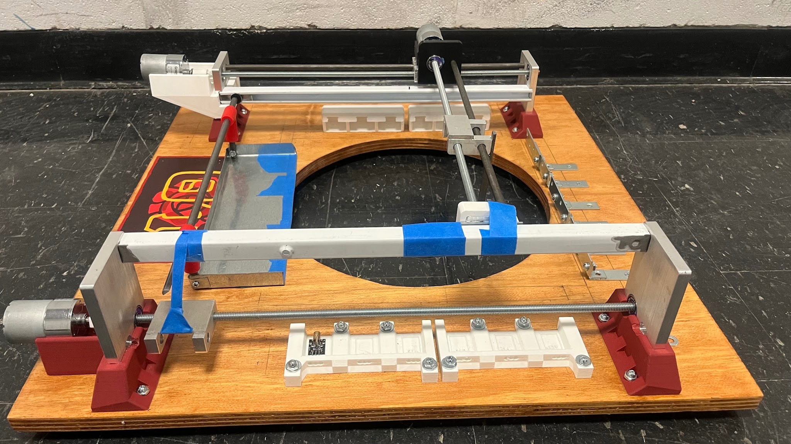
Overview
The Automated Hamburger Flipper was a team project completed during Spring 2025 as part of Theta Tau's pledge process. As Pledge Class President, I coordinated my team's progress, organized weekly work, contributed to design discussions, and helped fabricate and assemble the prototype alongside my teammates.
Our goal was to build an automated system that could locate a hamburger patty on a grill, monitor its internal temperature, flip it during cooking, and transfer it onto a plate once it was fully cooked. The final design combined mechanical components, sensors, Arduino-based control, and automated motion in a gantry-mounted system.
Design Concept
One of the main design challenges was locating a patty anywhere on the grill without using cameras or manual positioning. Our team designed a gantry-style system mounted above the grill that allowed both the temperature probe and spatula to move independently across the cooking surface.
A laser sensor array determined the patty's X-position. Each laser corresponded to a fixed location on the grill. When a beam was interrupted, the carriage moved to the matching position.
Once aligned, the temperature probe advanced along the Y-axis until it detected a sudden increase in temperature, indicating that it had reached the patty rather than the grill surface. The probe remained in place until the target temperature was reached, then retracted so the spatula could perform the flipping sequence.
Using laser sensors instead of a camera simplified the design while still providing reliable positioning.
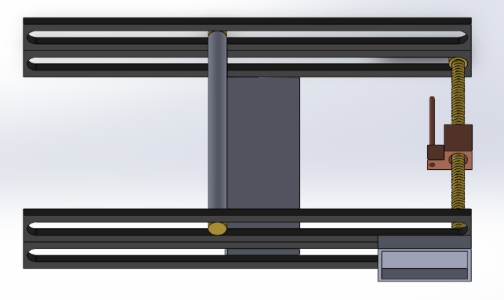
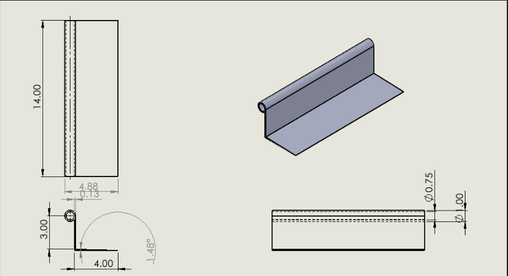
CAD Development
Before fabrication, our team modeled the complete system in SolidWorks to verify the layout and make sure every moving component had enough clearance to operate across the grill.
The assembly included the gantry frame, rail system, carriage mechanisms, threaded rod drives, rotating spatula, and temperature probe assembly. Building the full CAD model helped identify potential interference before manufacturing began.
Components such as the rails and spatula were modeled individually before being integrated into the complete assembly.
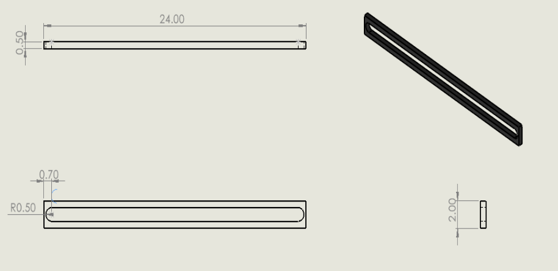
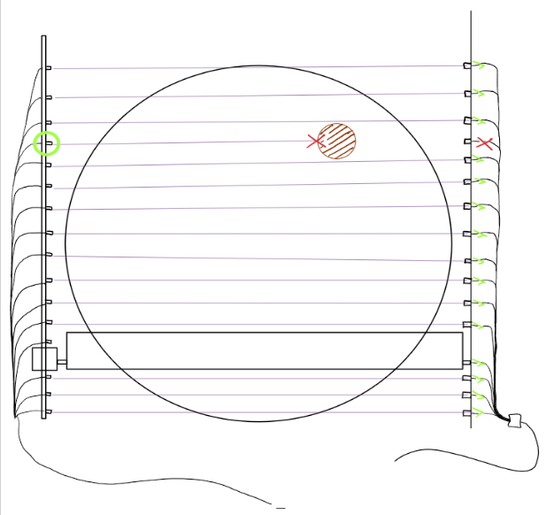
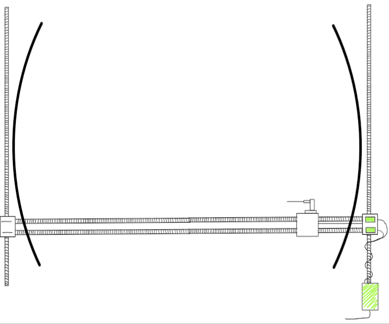
Fabrication & Assembly
The frame is built from plywood with a circular cutout sized to sit directly over the grill's cooking surface, reinforced with aluminum brackets at the rail mounts. I used skateboard-style bearings for the linear carriages riding along the threaded rods, since they were inexpensive, easy to source, and rigid enough for the loads involved. 3D-printed components handled the carriage blocks, motor mounts, and rail end caps, which let me iterate on fit quickly instead of machining new brackets for every adjustment.
Each axis is driven by a DC gearmotor turning a threaded rod, converting rotation into linear carriage motion. Getting consistent thread engagement across the full 24-inch rail span took some tuning — small misalignments between the rail and the rod caused binding, which I solved by loosening tolerances slightly at the printed carriage interfaces and confirming smooth travel across the whole range before mounting the frame permanently over the grill.
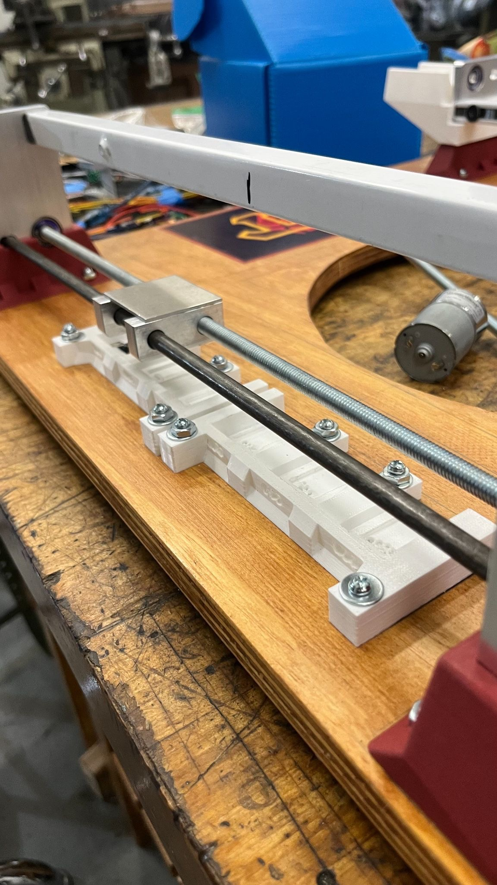
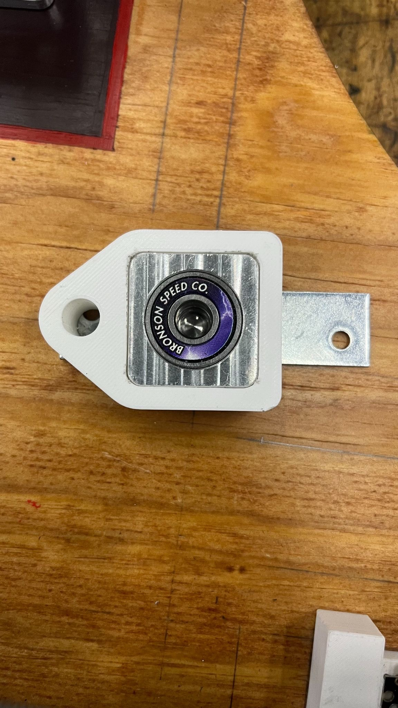
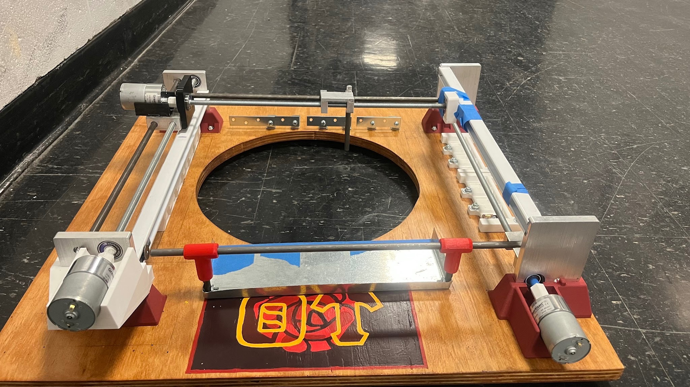
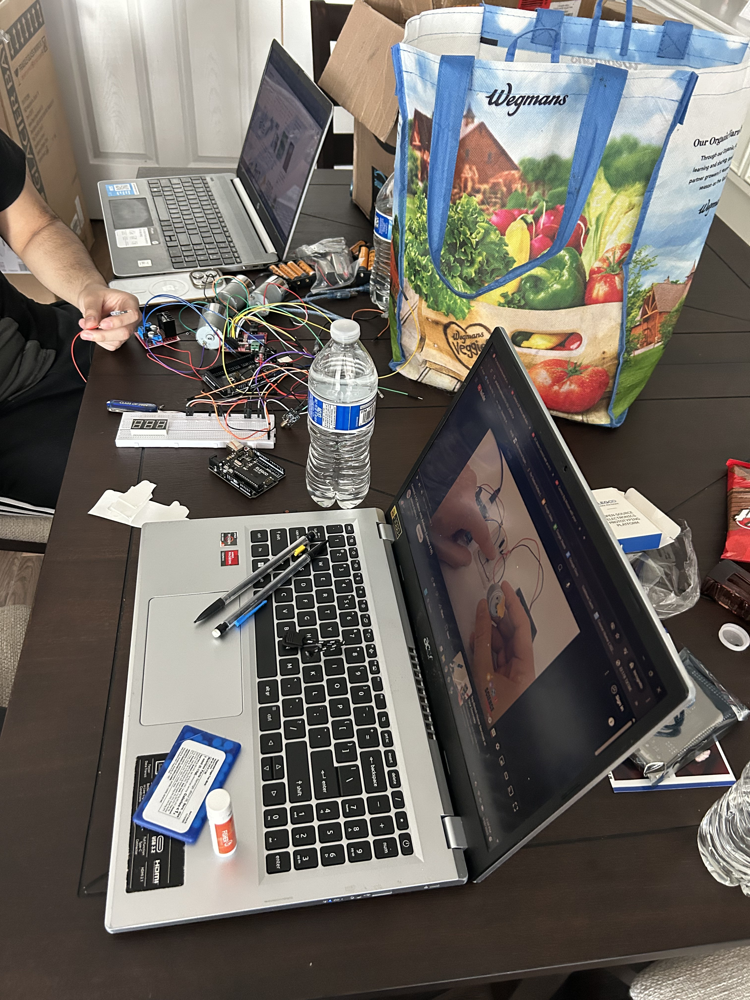
Sensing & Temperature Monitoring
Temperature sensing uses a DS18B20 waterproof digital probe, chosen for its wide range (-55°C to 125°C) and native compatibility with Arduino. Once the probe is inserted into the patty, it holds position and continuously reads temperature until the patty reaches 160°F, the standard safe internal temperature for ground beef, at which point the control logic retracts the probe out of the way of the spatula.
— add image here —
How It Operates
The full sequence, programmed in Arduino, runs as follows:
- The laser sensor array detects the patty at a specific beam position along the X-axis.
- The retracted probe moves along the Y-axis to that same X position, staying off to the side of the grill.
- The spatula travels along its own rail to the same detected location.
- The probe advances inward across the grill until it senses a sharp temperature change, indicating it has been inserted into the patty.
- The probe holds position, monitoring temperature until the patty reaches 160°F.
- The probe retracts to its home position, clearing the path for the spatula.
- The spatula rotates, flipping the patty.
- The probe reinserts into the patty to continue monitoring the second side.
- Once the second side is done, the spatula performs a second flip — this time lifting the patty off the grill entirely and depositing it onto a plate.
Testing & Results
After assembly, I tested the full sequence on the physical rig mounted over the grill: patty detection, probe insertion, temperature-triggered retraction, and the spatula flip. The system successfully detected a patty, drove the probe to insertion, and executed a flip in testing, validating the core mechanical and control approach end to end.
Getting there took iteration on both the mechanical and software sides — tuning motor timing and drive-rod tolerances so the carriages tracked accurately, and adjusting the temperature-change threshold used to detect probe insertion so it reliably distinguished the patty from the open grill surface.
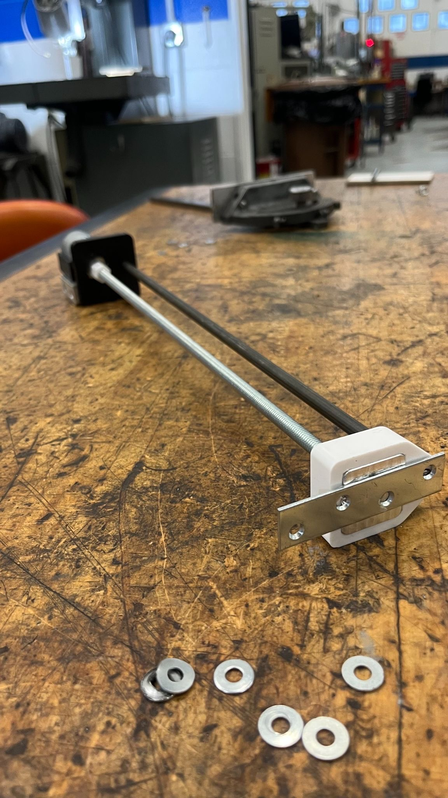
— add image here —
Results & Lessons Learned
This project pushed me to combine mechanical design, sensing, and embedded control into one working system, rather than treating them as separate problems. The laser-array detection approach turned out to be a reliable, low-cost way to localize an object without vision processing, and the thermal-gradient method for probe insertion solved patty-edge detection without needing a separate proximity sensor on that axis.
Running this alongside leading my pledge class also meant balancing hands-on fabrication time with the coordination, scheduling, and presentation work that came with the President role — twice-weekly technical progress presentations kept the build honest and on schedule, and ultimately every member of our 13-person pledge class completed the program on time.